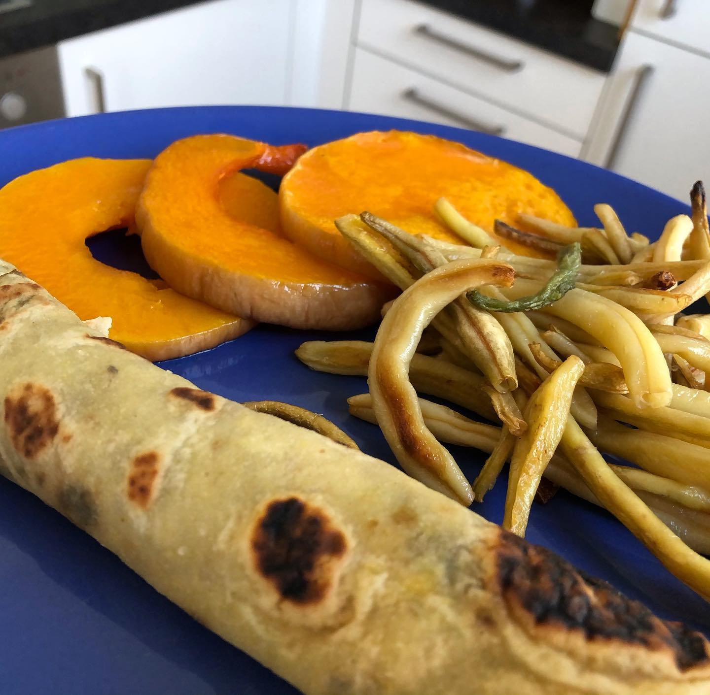

Hovädzie mäso podľa @varim.peciem.od.oka — Normy Jedál
Trhané hovädzie v zemiakovej lokši
Nie som veľmi mäsová, ale občas potrebujem dostať nejaké mäsko do najmenšieho člena našej rodiny. Väčšinou ho nesmie vidieť, musí v jedle byť nejaká iná výrazná chuť a podávať ho s niečim, čo má fakt rada. Recept mal obrovský úspech, tak si ho tu ukladám.
Trhané hovädzie mäso
🥩 hovädzie mäso ( ja som mala 2 plátky sirloin steaku, ale zjedli by sme aj viac) Možno by bolo lepšie niečo viac prerastenejšie
🥩 cibuľa
🥩 olivový olej
🥩 biely alkohol alebo citrónová šťava
🥩 čierne korenie
🥩 vetvička rozmarínu
🥩 maslo
Mäso som umyla, utrela do sucha a deň vopred naložila do zmesi olivového oleja, alkoholu a korenia. Alkohol alebo citrónová šťava vraj mäsko zjemnia. Ráno som vybrala mäso z chladničky o cca 30 min skôr, keďže nebolo veľmi prerastené, nechala som ho len jemne odkvapkať, neutierala som a šup zatiahnuť na dobre rozpálenú priľnavú panvicu. Keď sa od nej odlepilo, otočila som na druhú stranu. Malo krásnu zlatú farbu a začalo rozvoniavať po byte. Keď sa odlepilo aj z druhej strany, fakt to bola minútka, podliala som horúcou vodou do 2/3, okolo som rozsypala na hrubo nakrájanú cibuľu, na mäso položila čerstvý rozmarín, prikryla pokrievkou a dala piecť do rúry na cca 130 stupňov asi 2,5-3 hodiny. V polovici pečenia som mäso otočila. Cibuľka krásne zmäkla a zhnedla, voda sa vyparila. Hotové mäso som odložila do misky, potrhala vidličkou, šlo to fakt ľahúčko a prikryla, aby nevychladlo. Panvicu s cibuľou som dala na sporák, priliala troška vody, aby sa “roztopil” výpek, cibuľu som roztlačila vidličkou na kašu, pridala kúsok masla a soľ. Hotovú cibuľovú kašu som zamiešala do mäsa a plnila lokše. Aby bola aj nejaká zeleninka, podávala som s pečenou tekvicou a fazuľkami
#lokse #trhanehovadzie #plnenaloksa #loksaplnenamasom
#maso #hovadzie #hovadziemaso